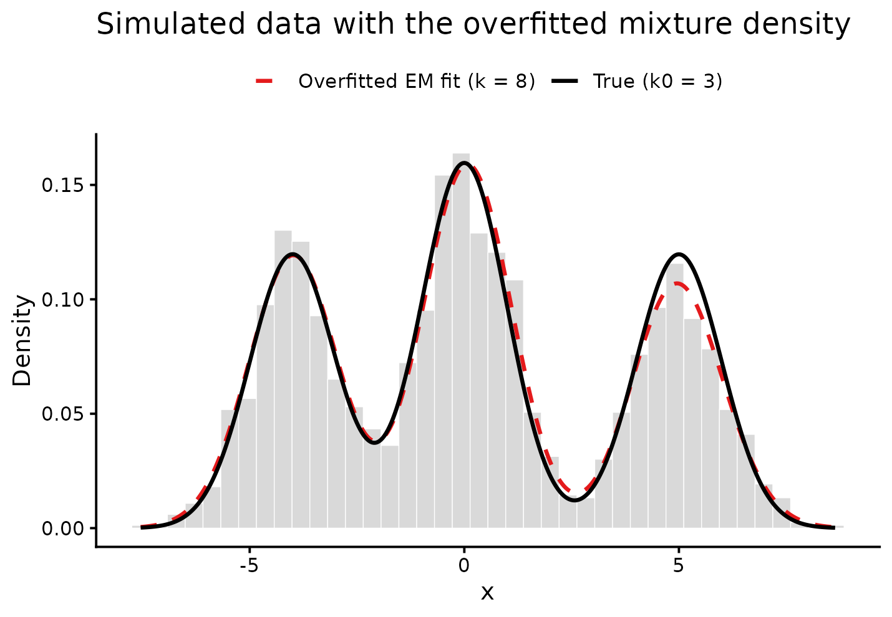
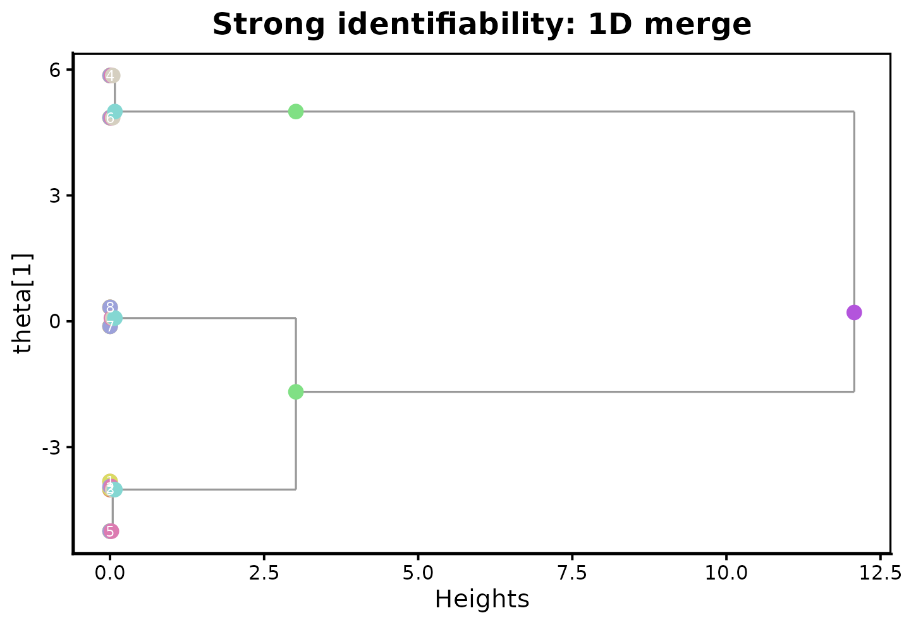
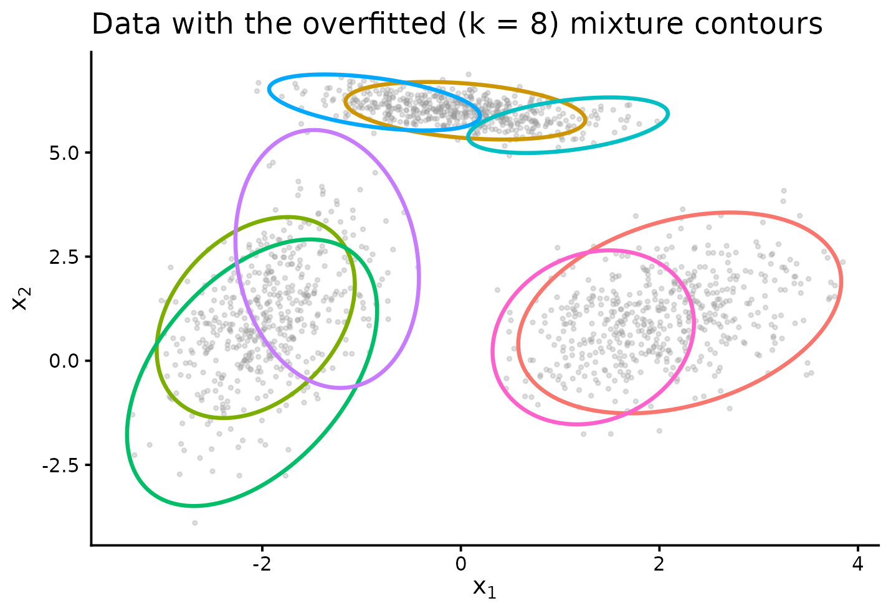
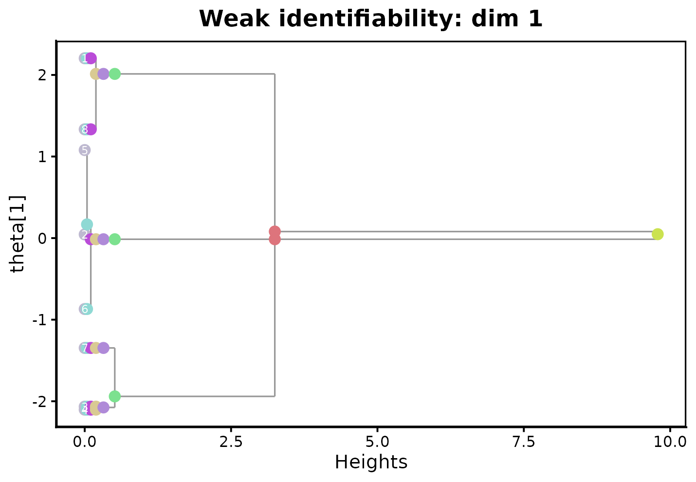
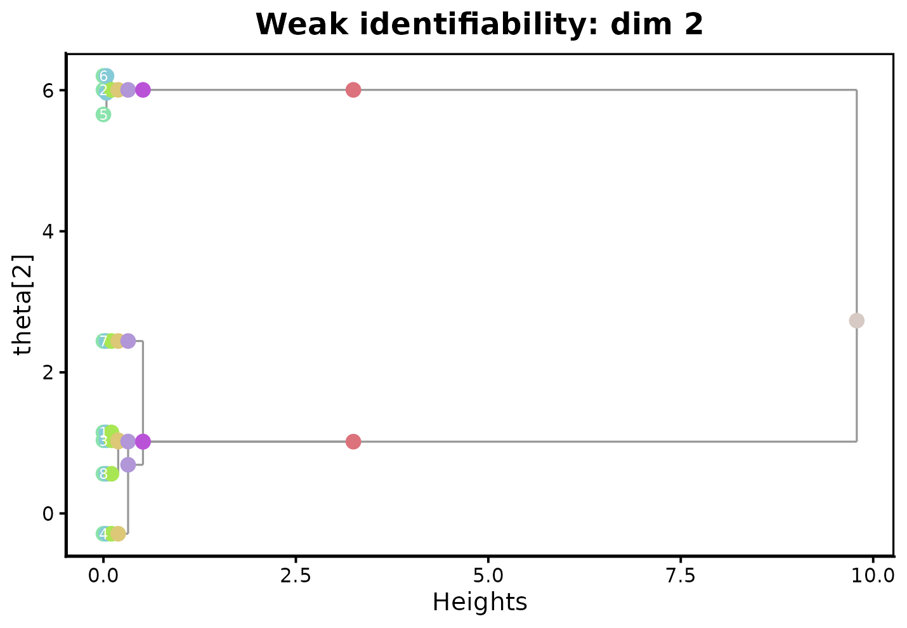

The problem this package solves
Fitting a finite mixture model requires choosing the number of components . In practice is unknown, so it is common to overfit on purpose: fit with more components than you believe are really there, then try to make sense of the result. Unfortunately, overfitted mixture models come with a real statistical cost. Parameter estimates for an overfitted mixing measure converge much more slowly than for a correctly-specified one — as slowly as for some Gaussian mixtures — and the fit typically contains redundant, near-duplicate components that are hard to interpret.
dendroMixR implements the method from Do, Do, McKinley,
Terhorst, and Nguyen, “Dendrogram of mixing measures: Hierarchical
clustering and model selection for finite mixture models” (a
manuscript). The idea is to take a single overfitted fit and repeatedly
merge its two most similar components (its “atoms”), producing a nested
sequence of mixing measures with
components — much like agglomerative hierarchical clustering, but
applied to mixture atoms rather than data points. The paper shows that
this merging procedure recovers the fast,
root-
convergence rate at the true number of components, even though the
starting overfitted fit converged slowly, and it does so without ever
re-fitting the model.
This vignette shows the two core functions in action:
-
dendrogram_mixing()performs the merging and returns a hierarchical clustering object (hc), the sequence of intermediate mixing measures (Gs), and the merge history (merge_pair). -
plot_dendrogram_mixing()visualizes the result as a dendrogram, with one parameter dimension shown at a time.
A minimal worked example
Before working with simulated data, it helps to see
dendrogram_mixing() on a small, hand-built mixing measure
so the mechanics are clear. Here are six atoms in one dimension,
arranged so that atoms 1-2, 3-4, and 5-6 are each close together (as if
an EM fit had produced redundant near-duplicate components near three
“true” locations at roughly
,
,
and
):
ps_toy <- c(0.05, 0.30, 0.05, 0.30, 0.15, 0.15)
thetas_toy <- c(-2.1, -1.9, 0.05, -0.05, 3.0, 3.2)
dmm_toy <- dendrogram_mixing(ps_toy, thetas_toy)
str(dmm_toy, max.level = 1)
#> List of 3
#> $ hc :List of 5
#> ..- attr(*, "class")= chr "hclust"
#> $ Gs :List of 6
#> $ merge_pair: int [1:5, 1:2] 3 1 3 1 1 4 2 4 2 2dmm_toy$hc$height gives the dissimilarity at which each
merge happened. Because atoms 1-2, 3-4, and 5-6 are near-duplicates, we
expect the first few merges to happen at a much smaller height than the
later ones that join genuinely distinct components:
dmm_toy$hc$height
#> [1] 0.0004285714 0.0017142857 0.0030000000 0.6270089286 3.4994169643The heights jump by roughly two orders of magnitude between the third and fourth merges — exactly the pattern we’d want, since the first three merges clean up redundant atoms while the last two join real, separated components.
Example 1: strongly identifiable mixtures (known variance)
When the component variance is known and shared across components
(the strongly identifiable case),
dendrogram_mixing() only needs weights and means:
sigmas = NULL.
To overfit in a way that actually corresponds to this model, we want
the maximum-likelihood fit of a location Gaussian mixture with the
variance held fixed at its known value — not a proxy such as
-means,
whose cluster assignments minimize within-cluster sum of squares rather
than maximizing this specific model’s likelihood. There isn’t a
commonly-used off-the-shelf package for that exact fit (packages like
mclust estimate the covariance too), so we borrow the small
EM implementation used in the paper’s own reproduction code (see
code_reproduce_paper/ in the package source) that does
exactly this:
em_location_gaussian <- function(x, k, max_iter = 100, tol = 1e-8, n_init = 10) {
n <- nrow(x); d <- ncol(x)
best_ll <- -Inf; best_result <- NULL
x_sq <- rowSums(x^2)
const <- -n * d / 2 * log(2 * pi)
for (init in seq_len(n_init)) {
mu <- x[sample.int(n, k), , drop = FALSE]
lp <- rep(-log(k), k)
ll_old <- -Inf
for (iter in seq_len(max_iter)) {
mu_sq <- rowSums(mu^2)
log_resp <- -0.5 * (x_sq - 2 * tcrossprod(x, mu) + rep(mu_sq, each = n))
for (j in seq_len(k)) log_resp[, j] <- log_resp[, j] + lp[j]
log_max <- do.call(pmax, as.data.frame(log_resp))
log_resp <- log_resp - log_max
rs <- rowSums(exp(log_resp))
ll_new <- sum(log_max + log(rs)) + const
if (abs(ll_new - ll_old) < tol * abs(ll_old)) break
ll_old <- ll_new
# M-step: weights update, means update -- variance is *not* re-estimated
resp <- exp(log_resp) / rs
nk <- colSums(resp)
lp <- log(nk / n)
mu <- crossprod(resp, x) / nk
}
if (ll_new > best_ll) {
best_ll <- ll_new
best_result <- list(ps = as.numeric(nk / n), thetas = mu)
}
}
best_result
}We simulate data from a well-separated 3-component 1-D Gaussian mixture with unit variance, then deliberately overfit with components using this EM routine (passing the data as an matrix, since the function is written for general dimension with known covariance ):
n <- 2000
ps0 <- c(0.3, 0.4, 0.3)
mu0 <- c(-4, 0, 5)
k0 <- 3
z <- sample(k0, n, replace = TRUE, prob = ps0)
x <- rnorm(n, mu0[z], sd = 1)
k_over <- 8
fit_over <- em_location_gaussian(matrix(x, ncol = 1), k = k_over)
ps_over <- fit_over$ps
theta_over <- as.numeric(fit_over$thetas)
sort(theta_over)
#> [1] -5.0041942 -4.0139452 -3.9685303 -3.8206926 -0.1203620 0.3321594 4.8537582
#> [8] 5.8574847Before merging, it’s worth looking at what this overfitted fit
actually produced. The histogram below shows the simulated data together
with the true 3-component density and the overfitted 8-component density
(both use the known variance
).
Perhaps surprisingly, the two lines are nearly indistinguishable — the
overfitted density is an excellent fit, exactly as mixture
theory predicts (density estimation converges fast even when the model
is overfitted). The individual overfitted atom locations printed above
tell a different story, though: several of the 8 values sit well away
from any of the true means
,
which is the slow parameter convergence the paper’s
introduction describes. A good density fit alone doesn’t imply good
parameter estimates – this is precisely the gap
dendrogram_mixing() is designed to close:
xgrid <- seq(min(x), max(x), length.out = 400)
dens_true <- sapply(xgrid, function(v) sum(ps0 * dnorm(v, mu0, sd = 1)))
dens_over <- sapply(xgrid, function(v) sum(ps_over * dnorm(v, theta_over, sd = 1)))
df_dens <- data.frame(
x = rep(xgrid, 2),
density = c(dens_true, dens_over),
Model = rep(c("True (k0 = 3)", "Overfitted EM fit (k = 8)"), each = length(xgrid))
)
ggplot(data.frame(x = x), aes(x = x)) +
geom_histogram(aes(y = after_stat(density)), bins = 40,
fill = "grey85", color = "white", linewidth = 0.2) +
geom_line(data = df_dens,
aes(x = x, y = density, color = Model, linetype = Model),
linewidth = 1) +
scale_color_manual(values = c("True (k0 = 3)" = "black",
"Overfitted EM fit (k = 8)" = "#e41a1c")) +
scale_linetype_manual(values = c("True (k0 = 3)" = "solid",
"Overfitted EM fit (k = 8)" = "dashed")) +
theme_classic(base_size = 13) +
theme(legend.position = "top", legend.title = element_blank()) +
labs(x = "x", y = "Density",
title = "Simulated data with the overfitted mixture density")
Now merge the overfitted fit down with
dendrogram_mixing():
dmm1 <- dendrogram_mixing(ps_over, theta_over)
dmm1$hc$height
#> [1] 0.0001059887 0.0016800224 0.0205552064 0.0214607865 0.0353270603
#> [6] 2.9366030608 9.0585934950dmm1$Gs holds the mixing measure at every level of the
tree, from
atoms down to
.
Cutting at the true
(Gs[[k_over - k0 + 1]]) recovers means very close to the
truth
()
and weights reasonably close to it (0.3/0.4/0.3), even though no
re-fitting took place – a big improvement over reading off any 3 of the
8 individual overfitted atoms directly:
merged3 <- dmm1$Gs[[k_over - k0 + 1]]
merged3$ps
#> [1] 0.3082477 0.2830893 0.4086630
merged3$thetas
#> [1] -4.01213190 4.99914495 0.07597814plot_dendrogram_mixing() visualizes the merge sequence.
Each column of points is one level of the tree
(
atoms down to 1); tracing the gray branches from left to right shows
which atoms combine and at what height:
plot_dendrogram_mixing(dmm1, main = "Strong identifiability: 1D merge")
Example 2: weakly identifiable mixtures (location-scale Gaussian)
Location-scale Gaussian mixtures — where both the mean and
the covariance are estimated — are weakly identifiable and are
known to have especially slow convergence when overfitted. Pass a
sigmas argument (a list of covariance matrices for
multivariate data, or a numeric vector of variances in 1-D) to use the
weak-identifiability merge rule.
We simulate 2-D data from three Gaussians with different covariance
structures and fit an overfitted
Gaussian mixture with mclust:
library(mclust)
#> Package 'mclust' version 6.1.3
#> Type 'citation("mclust")' for citing this R package in publications.
n <- 1500
ps0 <- c(1/3, 1/3, 1/3)
mus0 <- matrix(c( 2, 1,
0, 6,
-2, 1), nrow = 3, byrow = TRUE)
sigmas0 <- list(
matrix(c(0.50, 0.30, 0.30, 1.00), 2, 2),
matrix(c(0.50, -0.10, -0.10, 0.10), 2, 2),
matrix(c(0.25, 0.30, 0.30, 2.00), 2, 2)
)
k0 <- 3
z <- sample(k0, n, replace = TRUE, prob = ps0)
x <- matrix(0, n, 2)
for (i in seq_len(n)) x[i, ] <- MASS::mvrnorm(1, mus0[z[i], ], sigmas0[[z[i]]])
k_over <- 8
fit <- Mclust(x, G = k_over, modelNames = "VVV", verbose = FALSE)
ps_over <- fit$parameters$pro
mus_over <- t(fit$parameters$mean)
sigmas_over <- lapply(seq_len(k_over), function(j) fit$parameters$variance$sigma[, , j])As in the 1-D case, it helps to see the overfitted solution before
merging. The scatter plot below shows the simulated 2-D data with the 8
overfitted components drawn as their 95%-confidence contours (ellipses).
Several ellipses cover essentially the same cloud of points — visual
evidence of the redundant, overfitted atoms that
dendrogram_mixing() will merge away:
gauss_ellipse <- function(mu, Sigma, level = 0.95, n_pts = 200) {
eig <- eigen(Sigma)
r <- sqrt(qchisq(level, df = 2))
angs <- seq(0, 2 * pi, length.out = n_pts)
pts <- t(mu + r * eig$vectors %*% diag(sqrt(eig$values)) %*% rbind(cos(angs), sin(angs)))
data.frame(x1 = pts[, 1], x2 = pts[, 2])
}
ell_over <- do.call(rbind, lapply(seq_len(k_over), function(j) {
e <- gauss_ellipse(mus_over[j, ], sigmas_over[[j]])
e$comp <- factor(j)
e
}))
ggplot(data.frame(x1 = x[, 1], x2 = x[, 2]), aes(x1, x2)) +
geom_point(color = "grey60", alpha = 0.3, size = 0.7) +
geom_path(data = ell_over, aes(x1, x2, group = comp, color = comp), linewidth = 1) +
theme_classic(base_size = 13) +
theme(legend.position = "none") +
labs(x = expression(x[1]), y = expression(x[2]),
title = "Data with the overfitted (k = 8) mixture contours")
dmm2 <- dendrogram_mixing(ps_over, mus_over, sigmas_over)
dmm2$hc$height
#> [1] 0.03970941 0.06439435 0.08755771 0.12865437 0.19340672 2.73325708 6.53973515Cutting at again recovers parameters close to the truth:
merged3_weak <- dmm2$Gs[[k_over - k0 + 1]]
merged3_weak$ps
#> [1] 0.3353346 0.3439536 0.3207118
matrix(merged3_weak$thetas, ncol = 2)
#> [,1] [,2]
#> [1,] 2.01270936 1.019218
#> [2,] -0.01399507 6.004548
#> [3,] -1.94021150 1.015346dendrogram_mixing() returns a standard
hclust object in $hc, so familiar tools like
cutree() work directly on it — here recovering which of the
8 overfitted components belong to which of the 3 underlying
clusters:
cutree(dmm2$hc, k = 3)
#> 1 2 3 4 5 6 7 8
#> 1 2 3 3 2 2 3 1Because parameters are multivariate here,
plot_dendrogram_mixing() takes a dim argument
to choose which coordinate to display:
plot_dendrogram_mixing(dmm2, dim = 1, main = "Weak identifiability: dim 1")
plot_dendrogram_mixing(dmm2, dim = 2, main = "Weak identifiability: dim 2")
Choosing where to cut the dendrogram
Both examples above cut the tree at the known true
for illustration. In practice
is unknown, and the heights in dmm$hc$height are themselves
informative: the paper shows that merges among redundant, overfitted
atoms happen at heights shrinking to 0 as the sample size grows, while
merges between genuinely distinct components stay bounded away from 0 —
visible above as the sharp jump in height between the early and late
merges in both examples. A more formal, likelihood-aware selection rule
(the paper’s Dendrogram Selection Criterion, compared there against
AIC/BIC/ICL) will be covered in a follow-up vignette on model
selection.
Session info
sessionInfo()
#> R version 4.6.1 (2026-06-24)
#> Platform: x86_64-pc-linux-gnu
#> Running under: Ubuntu 24.04.4 LTS
#>
#> Matrix products: default
#> BLAS: /usr/lib/x86_64-linux-gnu/openblas-pthread/libblas.so.3
#> LAPACK: /usr/lib/x86_64-linux-gnu/openblas-pthread/libopenblasp-r0.3.26.so; LAPACK version 3.12.0
#>
#> locale:
#> [1] LC_CTYPE=C.UTF-8 LC_NUMERIC=C LC_TIME=C.UTF-8
#> [4] LC_COLLATE=C.UTF-8 LC_MONETARY=C.UTF-8 LC_MESSAGES=C.UTF-8
#> [7] LC_PAPER=C.UTF-8 LC_NAME=C LC_ADDRESS=C
#> [10] LC_TELEPHONE=C LC_MEASUREMENT=C.UTF-8 LC_IDENTIFICATION=C
#>
#> time zone: UTC
#> tzcode source: system (glibc)
#>
#> attached base packages:
#> [1] stats graphics grDevices utils datasets methods base
#>
#> other attached packages:
#> [1] mclust_6.1.3 ggplot2_4.0.3 dendroMixR_0.0.0.9000
#>
#> loaded via a namespace (and not attached):
#> [1] gtable_0.3.6 jsonlite_2.0.0 compiler_4.6.1
#> [4] Rcpp_1.1.2 stringr_1.6.0 cluster_2.1.8.2
#> [7] jquerylib_0.1.4 systemfonts_1.3.2 scales_1.4.0
#> [10] textshaping_1.0.5 yaml_2.3.12 fastmap_1.2.0
#> [13] R6_2.6.1 labeling_0.4.3 curl_7.1.0
#> [16] knitr_1.51 MASS_7.3-65 Rtsne_0.17
#> [19] desc_1.4.3 bslib_0.11.0 RColorBrewer_1.1-3
#> [22] rlang_1.3.0 V8_8.2.0 stringi_1.8.7
#> [25] cachem_1.1.0 xfun_0.60 fs_2.1.0
#> [28] sass_0.4.10 S7_0.2.2 otel_0.2.0
#> [31] cli_3.6.6 magrittr_2.0.5 pkgdown_2.2.1
#> [34] withr_3.0.3 digest_0.6.39 grid_4.6.1
#> [37] lifecycle_1.0.5 randomcoloR_1.1.0.1 vctrs_0.7.3
#> [40] evaluate_1.0.5 glue_1.8.1 farver_2.1.2
#> [43] ragg_1.5.2 colorspace_2.1-3 rmarkdown_2.31
#> [46] tools_4.6.1 htmltools_0.5.9